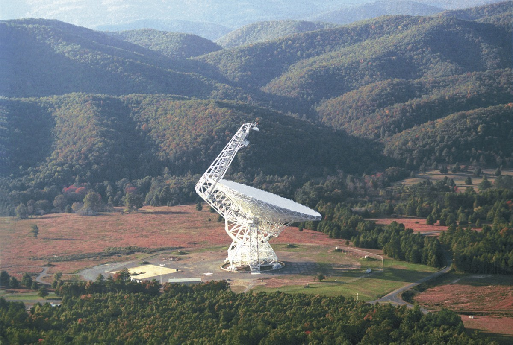

| Home |
| About |
| Blog |

 |
Image courtesy NSF / GBO / AUI |
|
Cat’s Eye Enterprises, LLC is a small business based in the foothills of West Virginia’s Appalachian Mountains, only a few hours’ drive from a world-famous radio astronomy research facility — the Green Bank Observatory, home of the world’s largest fully steerable telescope. As the founder of this company, my goal is to bring science and technology down to Earth, and to show how exciting and beautiful it is when it is made clear. As a way to work toward this goal, I will post short explanations of different science related topics on my blog, particularly in physics and astronomy. I hope that by sharing my enthusiasm, others may discover their own interest in these subjects and realize how lucky we are to be living in an era when we are learning so much about our place in space and time.
The Green Bank Observatory is a beautiful and amazing place, which is why Cat’s Eye Enterprises is dedicated to doing all we can to protect and advocate for it. To find out what you can do to help keep this national treasure fully funded, go here: https://www.facebook.com/GO-Green-Bank-Observatory-1862513250638950/ -Ellie White
|